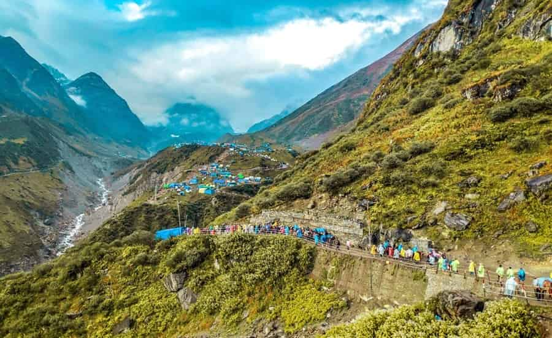

Uttarakhand
Char Dham: Himalayan Peaks
The Himalayan Char Dham Yatra is not merely a journey through difficult terrain; it is an ascent towards the divine. Nestled high in the Garhwal Himalayas, the four sacred abodes of Yamunotri, Gangotri, Kedarnath, and Badrinath form a circuit of immense spiritual power. This pilgrimage is considered a paramount duty for a devout Hindu, a form of austerity (*tapas*) that cleanses lifetimes of sins and opens the gateway to liberation (*mokṣa*).
The Yatra as Tapas (Austerity)
The Skanda Purana glorifies pilgrimage undertaken on foot (*padayātrā*) as the "greatest penance." The very act of leaving the comforts of home, facing the harsh weather, and navigating the challenging mountain paths is a form of spiritual discipline. It disciplines the body and purifies the mind, making the pilgrim receptive to the divine vibrations of these sacred sites. Each step taken with devotion is a step closer to the ultimate truth.
The Four Sacred Abodes
Yamunotri: Source of Purity. The yatra traditionally begins at Yamunotri, the source of the Yamuna River. A dip in the hot springs (*Tapt Kund*) and the worship of the Goddess Yamuna is said to protect the pilgrim from an untimely death.
Gangotri: The Descent of Ganga. Here, at the source of the holy Ganga, pilgrims pay homage to Mother Ganga. It is believed that King Bhagiratha performed severe penance here to bring the celestial river to earth to liberate his ancestors.
Kedarnath: The Abode of Shiva. Home to one of the twelve sacred Jyotirlingas, Kedarnath is the seat of Lord Shiva in his ascetic form. The trek to this temple, set against a backdrop of snow-clad peaks, is a journey to the very heart of Shaivism.
Badrinath: The Abode of Vishnu. The yatra culminates at Badrinath, the abode of Lord Vishnu in his form as Badrinarayan. It is here that the pilgrim receives the final blessings, completing the sacred circuit and accumulating immeasurable spiritual merit.